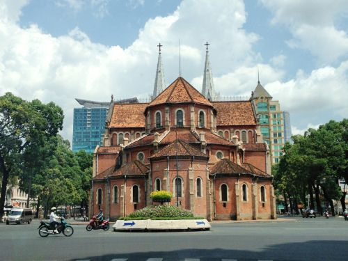
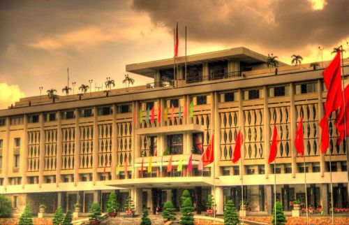

Duc Ba Church
Renufication Place
Ho Chi Minh City, formerly Saigon, is a bustling metropolis with a unique blend of modernity and tradition. The city is known for its vibrant street life, historical landmarks, and delicious food.
Ho Chi Minh City, formerly Saigon, is a bustling metropolis with a unique blend of modernity and tradition. The city is known for its vibrant street life, historical landmarks, and delicious food.